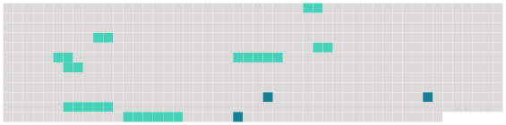

Longueur nb maillons : 11 mentions |
 |
», la section CFDT du centre hospitalier de Bar-le-Duc reproche à la direction de ne pas comprendre que le meilleur des investissement devant se faire en faveur du mieux-être [du personnel] [6 phrases] Quel meilleur système que de pomper dans la prime de service et sur le dos [du personnel] pour récupérer des sous quelque part... [2 phrases] Cette somme devrait être mise de côté chaque mois ( par 1 / 12e ) et cumulée pour arriver à 12 / 12e en fin d'année, c'est cela la prime de service [du personnel]
Fin novembre 2002, c'est donc 11 / 12e de la prime de service qui devait être à la disposition [du personnel] , soit environ 90 %. [1 phrases] . pourquoi n'avoir versé que 30 % [aux agents de l'hôpital] ?? [2 phrases] Y aurait -il eu des problèmes dans la gestion du budget [du personnel] ?? [6 phrases]
Et de conclure : « Administrer et gérer l'hôpital, ce n'est pas seulement investir des millions d'euros dans la construction d'un bâtiment commercial et endetter très fortement [notre] établissement pendant de nombreuses années, au détriment probable des besoins actuels et futurs de [notre] hôpital public. Diriger, c'est aussi avoir de la considération pour [les agents de l'hôpital] [1 phrases]
A l'heure où la pénurie des personnels de soins se fait sentir partout, cette direction n'a, semble-t'il, pas compris que le meilleur des « investissements », c'est d'abord « d'investir » pour que [les agents de notre hôpital public] se sentent bien, qu' [ils] aient des bonnes conditions de travail et de vie au travail et la rémunération en fait aussi partie ». |
 |
La ressource peut être téléchargée sur la page Ortolang
Si vous avez des questions ou vous voyez des erreurs, merci d'envoyer un mail à silvia.federzoni89@gmail.com
Site développé par S. Federzoni (contact)